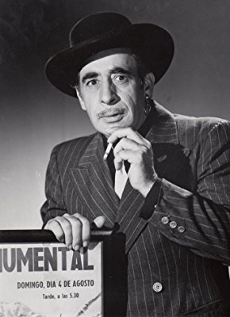

#8874 Was hast du denn im Krieg gemacht, Pappi?
Alternativ: What Did You Do in the War, Daddy?


 IMDB-Wertung: 6.7 / 10
IMDB-Wertung: 6.7 / 10  Metascore: 0
Metascore: 0 
Sizilien im Kriegsjahr 1943: US-Captain Cash soll das kleine Dorf Valerno einnehmen. Die kriegsmüden Soldaten treten zum Angriff an, doch zu deren Erstaunen sind die Bewohner des Örtchens bereit zu kapitulieren. Sie haben lediglich eine Bedingung: Das anstehende jährliche Weinfest soll wie geplant stattfinden können. Und die Angreifer seien "herzlich eingeladen". Das Fest ist ein großer Spaß für alle. Captain Cash ist bereits betrunken und außer Gefecht gesetzt, so übernimmt Lieutenant Christian das Kommando. Um der Gefechtsleitung Meldung über den Verlauf des Angriffs machen zu können, inszeniert die Einheit zusammen mit den Bewohnern kurzerhand den Kampf. Doch das Ganze droht aufzufliegen, als plötzlich die deutschen Truppen den italienischen Verbündeten zu Hilfe eilen...
Jahr: 1966
Dauer: 111 Minuten
FSK: 12
Land: USA Studio: United ArtistsTonspuren: DD2.0 - ,
Untertitel:
Auflösung: 1080p (1920x1080) Größe: 9431 MB
Genre: Komödie, Krieg
Regisseur: Blake Edwards
Drehbuch: William Peter Blatty
Soundtrack: Henry Mancini
Darsteller:
 James Coburn als
James Coburn als  Dick Shawn als
Dick Shawn als - Sergio Fantoni als
- Giovanna Ralli als
 Aldo Ray als
Aldo Ray als  Harry Morgan als
Harry Morgan als  Carroll O'Connor als
Carroll O'Connor als - Leon Askin als
- Jay Novello als
 Vito Scotti als
Vito Scotti als - Johnny Seven als
 William Bryant als
William Bryant als - Kurt Kreuger als
-  Robert Carricart als
- Ralph Manza als
- Danny Francis als
- Thomas Hunter als
- Jerry Martin als
 Noble 'Kid' Chissell als
Noble 'Kid' Chissell als - Vic Christy als
- Lee Stanley als
- Rico Cattani als
- Art Lewis als
- Herbert Ellis als
- Ken Wales als
- Eric Anderson als
- Ken Del Conte als
- Kelly Johnson als
- Vincent Barbi als
- Mushy Callahan als
- Mario Cimino als
- Giovanna Coppola als
- Bob Cornwell als
- John Cretoria als
- Carol Daniels als
- Mina Darno als
- Louise De Carlo als
- Horst Ebersberg als
- Carl Ekberg als
- Sondra Farrell als
- Philip Garris als
- Horst Graf als
- Ivana Kislinger als
- James Lanphier als
- Emily LaRue als
- Joe Lo Presti als
- Rex Morhan als
- Karla Most als
- Richard Niles als
- Joe Polina als
Datei: X:\1966\Was hast du denn im Krieg gemacht, Pappi (1966, FSK12, 1920x1080).mkv seit 04.05.2018
Festplatte: HD 1900-1970
 Es gibt insgesamt 27 Filme in der Gruppe '1966'
Es gibt insgesamt 27 Filme in der Gruppe '1966'